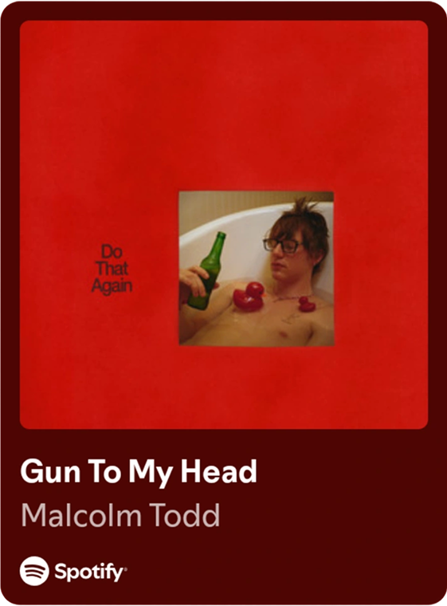

Malcolm Todd is a rising American singer-songwriter and producer from Los Angeles, California. He is known for his signature blend of indie pop, bedroom pop, and smooth alternative R&B. During the pandemic, Todd taught himself to play bass and guitar, which ignited his passion for songwriting. His breakthrough came in 2023 when his self-released singles, including "Art House" and "Roommates," went viral on TikTok. This massive online traction led to millions of streams and earned him a deal with Columbia Records. He released his debut mixtape, Sweet Boy, in 2024, followed by his self-titled debut album in 2025. Today, he is widely celebrated for his catchy basslines, fluid production, and authentic lyrics that capture the highs and lows of modern youth and relationships.
